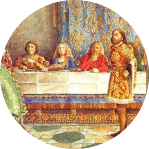

|  | 𝔎𝔦𝔫𝔤 𝔄𝔯𝔱𝔥𝔲𝔯 𝔅𝔞𝔠𝔨𝔰𝔱𝔬𝔯𝔶Ꭷ𝖗𝖎𝖌𝖎𝖓𝖘 |
𝔎𝔦𝔫𝔤 𝔄𝔯𝔱𝔥𝔲𝔯 (𝔚𝔢𝔩𝔰𝔥: 𝔅𝔯𝔢𝔫𝔦𝔫 𝔄𝔯𝔱𝔥𝔲𝔯, ℭ𝔬𝔯𝔫𝔦𝔰𝔥: 𝔄𝔯𝔱𝔥𝔲𝔯 𝔊𝔢𝔯𝔫𝔬𝔴, 𝔅𝔯𝔢𝔱𝔬𝔫: ℜ𝔬𝔲𝔢 𝔄𝔯𝔷𝔥𝔲𝔯)
𝔴𝔞𝔰 𝔞 𝔩𝔢𝔤𝔢𝔫𝔡𝔞𝔯𝔶 ℭ𝔢𝔩𝔱𝔦𝔠 𝔅𝔯𝔦𝔱𝔬𝔫 𝔴𝔥𝔬, 𝔞𝔠𝔠𝔬𝔯𝔡𝔦𝔫𝔤 𝔱𝔬 𝔪𝔢𝔡𝔦𝔢𝔳𝔞𝔩 𝔥𝔦𝔰𝔱𝔬𝔯𝔦𝔢𝔰 𝔞𝔫𝔡 𝔯𝔬𝔪𝔞𝔫𝔠𝔢𝔰, 𝔴𝔞𝔰
𝔩𝔢𝔞𝔡𝔢𝔯 𝔬𝔣 𝔱𝔥𝔢 ℭ𝔢𝔩𝔱𝔦𝔠 𝔅𝔯𝔦𝔱𝔬𝔫𝔰 𝔦𝔫 𝔟𝔞𝔱𝔱𝔩𝔢𝔰 𝔞𝔤𝔞𝔦𝔫𝔰𝔱 𝔖𝔞𝔵𝔬𝔫 𝔦𝔫𝔳𝔞𝔡𝔢𝔯𝔰 𝔬𝔣 𝔅𝔯𝔦𝔱𝔞𝔦𝔫 𝔦𝔫 𝔱𝔥𝔢 𝔩𝔞𝔱𝔢 5𝔱𝔥
𝔞𝔫𝔡 𝔢𝔞𝔯𝔩𝔶 6𝔱𝔥 𝔠𝔢𝔫𝔱𝔲𝔯𝔦𝔢𝔰. 𝔇𝔢𝔱𝔞𝔦𝔩𝔰 𝔬𝔣 𝔄𝔯𝔱𝔥𝔲𝔯'𝔰 𝔰𝔱𝔬𝔯𝔶 𝔞𝔯𝔢 𝔪𝔞𝔦𝔫𝔩𝔶 𝔠𝔬𝔪𝔭𝔬𝔰𝔢𝔡 𝔬𝔣 𝔚𝔢𝔩𝔰𝔥 𝔪𝔶𝔱𝔥𝔬𝔩𝔬𝔤𝔶,
𝔈𝔫𝔤𝔩𝔦𝔰𝔥 𝔣𝔬𝔩𝔨𝔩𝔬𝔯𝔢 𝔞𝔫𝔡 𝔩𝔦𝔱𝔢𝔯𝔞𝔯𝔶 𝔦𝔫𝔳𝔢𝔫𝔱𝔦𝔬𝔫, 𝔞𝔫𝔡 𝔪𝔬𝔰𝔱 𝔥𝔦𝔰𝔱𝔬𝔯𝔦𝔞𝔫𝔰 𝔬𝔣 𝔱𝔥𝔢 𝔭𝔢𝔯𝔦𝔬𝔡 𝔡𝔬 𝔫𝔬𝔱 𝔱𝔥𝔦𝔫𝔨 𝔱𝔥𝔞𝔱 𝔥𝔢
𝔴𝔞𝔰 𝔞 𝔥𝔦𝔰𝔱𝔬𝔯𝔦𝔠𝔞𝔩 𝔣𝔦𝔤𝔲𝔯𝔢. 𝔄𝔯𝔱𝔥𝔲𝔯 𝔦𝔰 𝔣𝔦𝔯𝔰𝔱 𝔯𝔢𝔠𝔬𝔯𝔡𝔢𝔡 𝔦𝔫 𝔰𝔬𝔲𝔯𝔠𝔢 𝔰𝔬𝔲𝔯𝔠𝔢𝔰 𝔴𝔥𝔦𝔠𝔥 𝔡𝔞𝔱𝔢 𝔱𝔬 300 𝔶𝔢𝔞𝔯𝔰
𝔞𝔣𝔱𝔢𝔯 𝔥𝔢 𝔦𝔰 𝔰𝔲𝔭𝔭𝔬𝔰𝔢𝔡 𝔱𝔬 𝔥𝔞𝔳𝔢 𝔩𝔦𝔳𝔢𝔡, 𝔱𝔥𝔢 𝔄𝔫𝔫𝔞𝔩𝔢𝔰 ℭ𝔞𝔪𝔟𝔯𝔦𝔞𝔢 𝔞𝔫𝔡 𝔱𝔥𝔢 ℌ𝔦𝔰𝔱𝔬𝔯𝔦𝔞
𝔅𝔯𝔦𝔱𝔱𝔬𝔫𝔲𝔪. ℌ𝔦𝔰 𝔫𝔞𝔪𝔢 𝔞𝔩𝔰𝔬 𝔬𝔠𝔠𝔲𝔯𝔰 𝔦𝔫 𝔢𝔞𝔯𝔩𝔶 𝔭𝔬𝔢𝔱𝔦𝔠 𝔰𝔬𝔲𝔯𝔠𝔢𝔰 𝔰𝔲𝔠𝔥 𝔞𝔰 𝔜 𝔊𝔬𝔡𝔬𝔡𝔡𝔦𝔫.
𝓐𝔯𝔱𝔥𝔲𝔯 𝔦𝔰 𝔞 𝔠𝔢𝔫𝔱𝔯𝔞𝔩 𝔣𝔦𝔤𝔲𝔯𝔢 𝔦𝔫 𝔱𝔥𝔢 𝔩𝔢𝔤𝔢𝔫𝔡𝔰 𝔪𝔞𝔨𝔦𝔫𝔤 𝔲𝔭 𝔱𝔥𝔢 𝔐𝔞𝔱𝔱𝔢𝔯 𝔬𝔣 𝔅𝔯𝔦𝔱𝔞𝔦𝔫. 𝔗𝔥𝔢 𝔩𝔢𝔤𝔢𝔫𝔡𝔞𝔯𝔶
𝔄𝔯𝔱𝔥𝔲𝔯 𝔡𝔢𝔳𝔢𝔩𝔬𝔭𝔢𝔡 𝔞𝔰 𝔞 𝔣𝔦𝔤𝔲𝔯𝔢 𝔬𝔣 𝔦𝔫𝔱𝔢𝔯𝔫𝔞𝔱𝔦𝔬𝔫𝔞𝔩 𝔦𝔫𝔱𝔢𝔯𝔢𝔰𝔱 𝔩𝔞𝔯𝔤𝔢𝔩𝔶 𝔱𝔥𝔯𝔬𝔲𝔤𝔥 𝔱𝔥𝔢 𝔭𝔬𝔭𝔲𝔩𝔞𝔯𝔦𝔱𝔶 𝔬𝔣
𝔊𝔢𝔬𝔣𝔣𝔯𝔢𝔶 𝔬𝔣 𝔐𝔬𝔫𝔪𝔬𝔲𝔱𝔥'𝔰 𝔣𝔞𝔫𝔠𝔦𝔣𝔲𝔩 𝔞𝔫𝔡 𝔦𝔪𝔞𝔤𝔦𝔫𝔞𝔱𝔦𝔳𝔢 12𝔱𝔥-𝔠𝔢𝔫𝔱𝔲𝔯𝔶 ℌ𝔦𝔰𝔱𝔬𝔯𝔦𝔞 ℜ𝔢𝔤𝔲𝔪 𝔅𝔯𝔦𝔱𝔞𝔫𝔫𝔦𝔞𝔢
(ℌ𝔦𝔰𝔱𝔬𝔯𝔶 𝔬𝔣 𝔱𝔥𝔢 𝔎𝔦𝔫𝔤𝔰 𝔬𝔣 𝔅𝔯𝔦𝔱𝔞𝔦𝔫). ℑ𝔫 𝔰𝔬𝔪𝔢 𝔚𝔢𝔩𝔰𝔥 𝔞𝔫𝔡 𝔅𝔯𝔢𝔱𝔬𝔫 𝔱𝔞𝔩𝔢𝔰 𝔞𝔫𝔡 𝔭𝔬𝔢𝔪𝔰 𝔱𝔥𝔞𝔱 𝔡𝔞𝔱𝔢
𝔣𝔯𝔬𝔪 𝔟𝔢𝔣𝔬𝔯𝔢 𝔱𝔥𝔦𝔰 𝔴𝔬𝔯𝔨, 𝔄𝔯𝔱𝔥𝔲𝔯 𝔞𝔭𝔭𝔢𝔞𝔯𝔰 𝔢𝔦𝔱𝔥𝔢𝔯 𝔞𝔰 𝔞 𝔤𝔯𝔢𝔞𝔱 𝔴𝔞𝔯𝔯𝔦𝔬𝔯 𝔡𝔢𝔣𝔢𝔫𝔡𝔦𝔫𝔤 𝔅𝔯𝔦𝔱𝔞𝔦𝔫 𝔣𝔯𝔬𝔪
𝔥𝔲𝔪𝔞𝔫 𝔞𝔫𝔡 𝔰𝔲𝔭𝔢𝔯𝔫𝔞𝔱𝔲𝔯𝔞𝔩 𝔢𝔫𝔢𝔪𝔦𝔢𝔰 𝔬𝔯 𝔞𝔰 𝔞 𝔪𝔞𝔤𝔦𝔠𝔞𝔩 𝔣𝔦𝔤𝔲𝔯𝔢 𝔬𝔣 𝔣𝔬𝔩𝔨𝔩𝔬𝔯𝔢, 𝔰𝔬𝔪𝔢𝔱𝔦𝔪𝔢𝔰 𝔞𝔰𝔰𝔬𝔠𝔦𝔞𝔱𝔢𝔡
𝔴𝔦𝔱𝔥 𝔱𝔥𝔢 𝔚𝔢𝔩𝔰𝔥 𝔬𝔱𝔥𝔢𝔯𝔴𝔬𝔯𝔩𝔡 𝔄𝔫𝔫𝔴𝔫. ℌ𝔬𝔴 𝔪𝔲𝔠𝔥 𝔬𝔣 𝔊𝔢𝔬𝔣𝔣𝔯𝔢𝔶'𝔰 ℌ𝔦𝔰𝔱𝔬𝔯𝔦𝔞 (𝔠𝔬𝔪𝔭𝔩𝔢𝔱𝔢𝔡 𝔦𝔫 1138)
𝔴𝔞𝔰 𝔞𝔡𝔞𝔭𝔱𝔢𝔡 𝔣𝔯𝔬𝔪 𝔰𝔲𝔠𝔥 𝔢𝔞𝔯𝔩𝔦𝔢𝔯 𝔰𝔬𝔲𝔯𝔠𝔢𝔰, 𝔯𝔞𝔱𝔥𝔢𝔯 𝔱𝔥𝔞𝔫 𝔦𝔫𝔳𝔢𝔫𝔱𝔢𝔡 𝔟𝔶 𝔊𝔢𝔬𝔣𝔣𝔯𝔢𝔶 𝔥𝔦𝔪𝔰𝔢𝔩𝔣, 𝔦𝔰 𝔲𝔫𝔨𝔫𝔬𝔴𝔫.